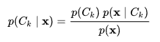
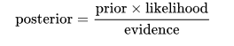
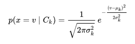

Data Mining
home
Mohammad Rizal Rahabillah (180411100121)
Naive Bayes Classifier
Naive Bayes classifier (NBC) merupakan salah satu metoda Machine Learning yang memanfaatkan perhitungan probabilitas dan statistik yang dikemukakan oleh ilmuwan Inggris Thomas Bayes, yaitu memprediksi probabilitas di masa depan berdasarkan pengalaman di masa sebelumnya.
Rumus-rumus naive bayes :

Atau bisa juga di tuliskan:

dimana p adalah adalah nilai dari :

1. Tampilkan data
from pandas import *
from IPython.display import HTML, display
from tabulate import tabulate
from math import log
from sklearn.feature_selection import mutual_info_classif
def table(df):
display(HTML(tabulate(df, tablefmt='html', headers='keys', showindex=False)))
df = read_csv('iris.csv', sep=',')
table(df)
| sepallength | sepalwidth | petallength | petalwidth | class | Class Prediksi |
|---|---|---|---|---|---|
| 5.1 | 3.5 | 1.4 | 0.2 | Iris-setosa | nan |
| 4.9 | 3 | 1.4 | 0.2 | Iris-setosa | nan |
| 4.7 | 3.2 | 1.3 | 0.2 | Iris-setosa | nan |
| 4.6 | 3.1 | 1.5 | 0.2 | Iris-setosa | nan |
| 5 | 3.6 | 1.4 | 0.2 | Iris-setosa | nan |
| 5.4 | 3.9 | 1.7 | 0.4 | Iris-setosa | nan |
| 4.6 | 3.4 | 1.4 | 0.3 | Iris-setosa | nan |
| 5 | 3.4 | 1.5 | 0.2 | Iris-setosa | nan |
| 4.4 | 2.9 | 1.4 | 0.2 | Iris-setosa | nan |
| 4.9 | 3.1 | 1.5 | 0.1 | Iris-setosa | nan |
| 7 | 3.2 | 4.7 | 1.4 | Iris-versicolor | nan |
| 6.4 | 3.2 | 4.5 | 1.5 | Iris-versicolor | nan |
| 6.9 | 3.1 | 4.9 | 1.5 | Iris-versicolor | nan |
| 5.5 | 2.3 | 4 | 1.3 | Iris-versicolor | nan |
| 6.5 | 2.8 | 4.6 | 1.5 | Iris-versicolor | nan |
| 5.7 | 2.8 | 4.5 | 1.3 | Iris-versicolor | nan |
| 6.3 | 3.3 | 4.7 | 1.6 | Iris-versicolor | nan |
| 4.9 | 2.4 | 3.3 | 1 | Iris-versicolor | nan |
| 6.6 | 2.9 | 4.6 | 1.3 | Iris-versicolor | nan |
| 5.2 | 2.7 | 3.9 | 1.4 | Iris-versicolor | nan |
| 6.3 | 3.3 | 6 | 2.5 | Iris-virginica | nan |
| 5.8 | 2.7 | 5.1 | 1.9 | Iris-virginica | nan |
| 7.1 | 3 | 5.9 | 2.1 | Iris-virginica | nan |
| 6.3 | 2.9 | 5.6 | 1.8 | Iris-virginica | nan |
| 6.5 | 3 | 5.8 | 2.2 | Iris-virginica | nan |
| 7.6 | 3 | 6.6 | 2.1 | Iris-virginica | nan |
| 4.9 | 2.5 | 4.5 | 1.7 | Iris-virginica | nan |
| 7.3 | 2.9 | 6.3 | 1.8 | Iris-virginica | nan |
| 6.7 | 2.5 | 5.8 | 1.8 | Iris-virginica | nan |
| 7.2 | 3.6 | 6.1 | 2.5 | Iris-virginica | nan |